全站 48 张知识卡，按页面分组。一张卡只画正本里的一段——规则、门槛、算法或清单；卡上每个字都能在对应页面里找到（规则核对基准日 2026-09-16）。点任一张放大看，键盘左右或滑动翻页；每张卡有自己的详情页可以分享。
- 宏利产品怎么选
- 宏利银行活期王 Advantage Account
- 宏利银行 GIC 定期存款
- Manulife One 一体化房贷账户
- 宏利银行的转账、e-Transfer 与电汇
- 宏利 Visa Infinite 与 Visa Platinum 信用卡
- 宏利定期寿险 Family Term 与 CoverMe／FollowMe
- 宏利重疾险 Lifecheque 与 CoverMe CI
- 宏利失能收入保障 PADI 与 Mortgage Disability
- 宏利个人健康牙科险 Flexcare／FollowMe 与 PHSP
- 宏利分红型终身寿险 Manulife Par
- 宏利万能寿险 Manulife UL
- 宏利 Vitality 健康互动计划 Go 与 Plus
- 活钱放活期王还是锁 GIC
- 一体化房贷账户 vs 高息活期账户
- 钱怎么进来、怎么花出去
- 银行 GIC 还是保险公司 GIA
- 利息收入与 T5：什么时候要报、什么时候收不到单
- 借来的钱，利息能不能抵税
- 寿险的钱在税上怎么走
- 遗产认证费用：各省差多少
- 注册账户在身故时怎么处理
- 公司持有寿险与资本红利账户 CDA
- 慈善捐赠与保险：怎么捐、什么时候捐
宏利产品怎么选

- 先看先看自己当前问的是产品本身、同类差别，还是钱进出时的税务问题。
- 易漏三条线回答的是不同问题；具体产品还要回到对应页面看条款和官方出处。
- 下一步去按产品、按对比或按税务问题，带具体问题找经纪。
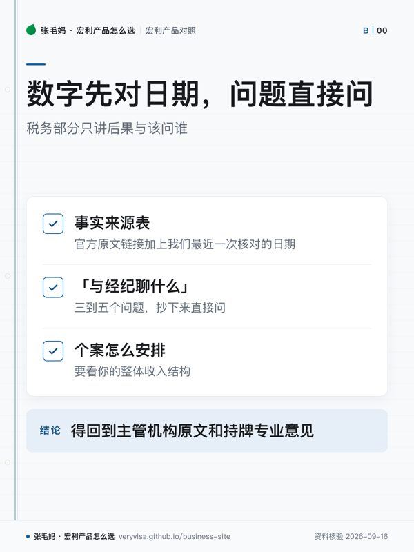
- 先看先看「事实来源表」，数字出现时先对一眼日期。
- 易漏利率、额度、费用会变，看到数字先对一眼日期。
- 下一步去按产品、按对比、按税务问题，带具体问题去找经纪。
宏利银行活期王 Advantage Account


宏利银行 GIC 定期存款


Manulife One 一体化房贷账户


宏利银行的转账、e-Transfer 与电汇


宏利 Visa Infinite 与 Visa Platinum 信用卡


宏利定期寿险 Family Term 与 CoverMe／FollowMe


宏利重疾险 Lifecheque 与 CoverMe CI
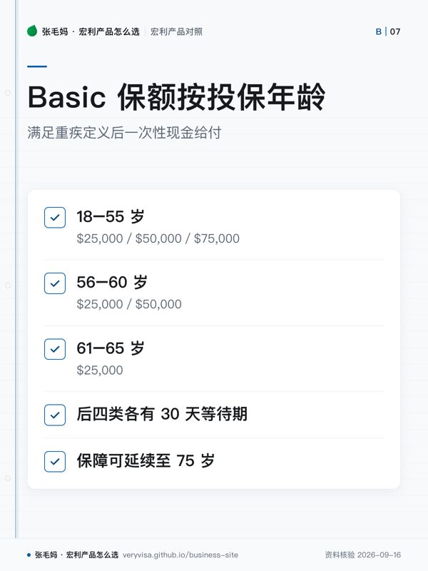
- 先看先辨三档人群：可选范围会随投保时年龄改变。
- 易漏别把那段期限理解成五类全部适用；最终范围还要回到合同核对。
- 下一步去按产品页，把自己的年龄和想买保额带给持牌专业人士核对。
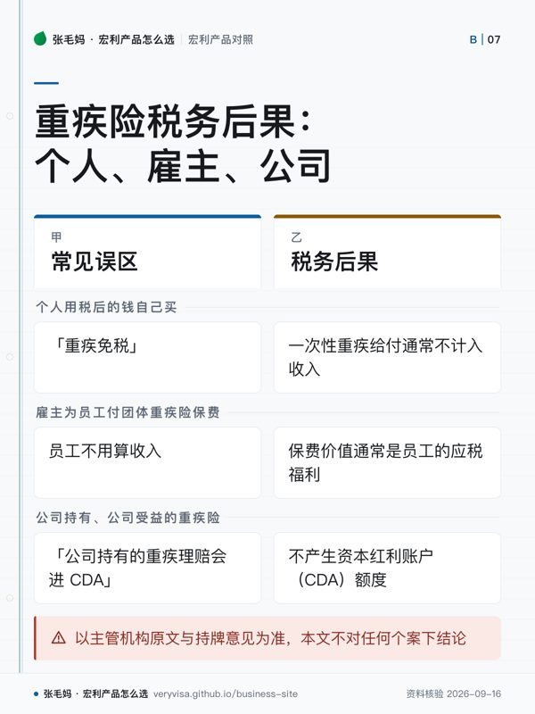
- 先看先按主体身份横向读，每一行都在纠正一个会改变税务判断的说法。
- 易漏员工兼股东时，还要先判断福利来自雇员身份还是股东身份；图里没有展开魁北克口径。
- 下一步去按税务问题，带公司持有或股东安排找持牌专业人士。
宏利失能收入保障 PADI 与 Mortgage Disability


宏利个人健康牙科险 Flexcare／FollowMe 与 PHSP


宏利分红型终身寿险 Manulife Par
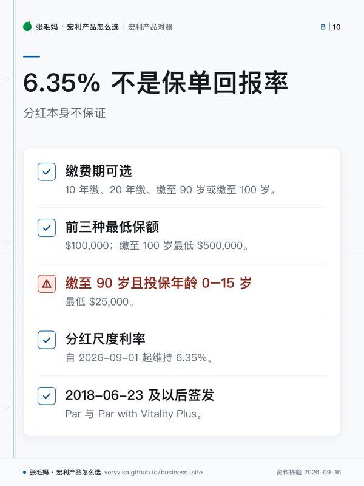
- 先看先用缴费安排和保额门槛筛掉不匹配的设计。
- 易漏最易误读的是利率：它受签发日期范围限制，也不是现金价值增长率。
- 下一步去按产品，带预算、投保年龄与目标核对可选方案。
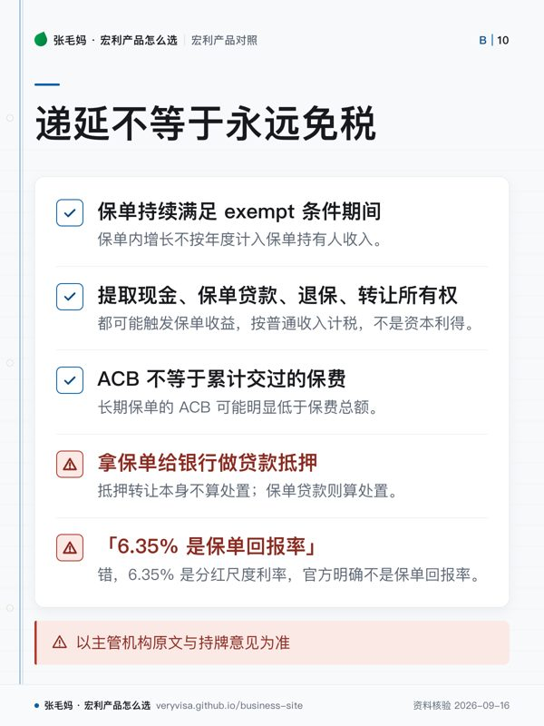
- 先看先区分保单内增长与发生交易后的税务结果。
- 易漏别把银行抵押与保险公司的贷款混成一种；交易前先拿当日成本资料。
- 下一步去按税务问题，带交易类型与持有人情况找持牌专业人士确认。
宏利万能寿险 Manulife UL
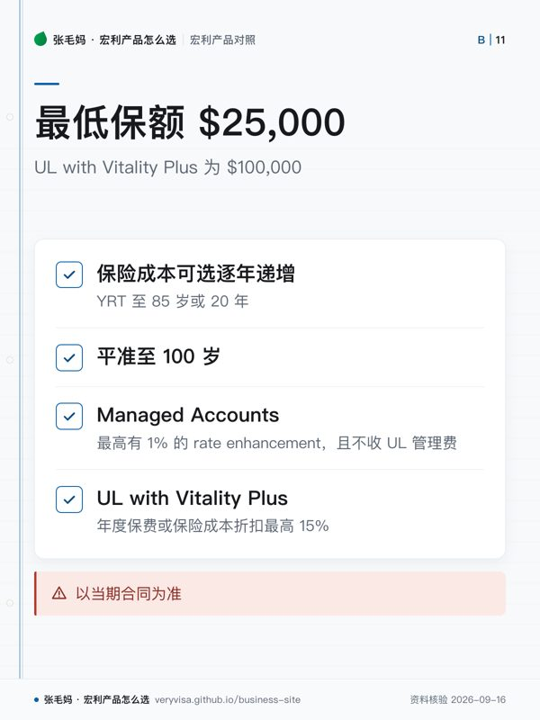
- 先看先看最低保额和保险成本期限，这是进入 illustration 前最直接的门槛。
- 易漏Vitality Plus 与普通 UL 的最低保额不是同一门槛，费率也要核对当期合同。
- 下一步去「按产品」看正式 illustration，带保额与保险成本选择找持牌专业人士复核。
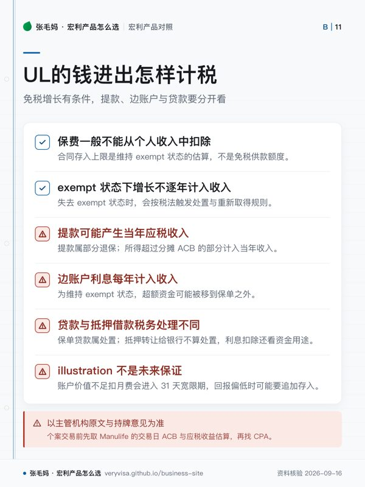
- 先看先把现金流按进入、累积、取出三个阶段拆开看。
- 易漏宣传示意并不等于未来兑现，外部账户也另有税负。
- 下一步动钱或改权属前，先索取当日税基与应税额测算并交专业人士复核。
宏利 Vitality 健康互动计划 Go 与 Plus


活钱放活期王还是锁 GIC
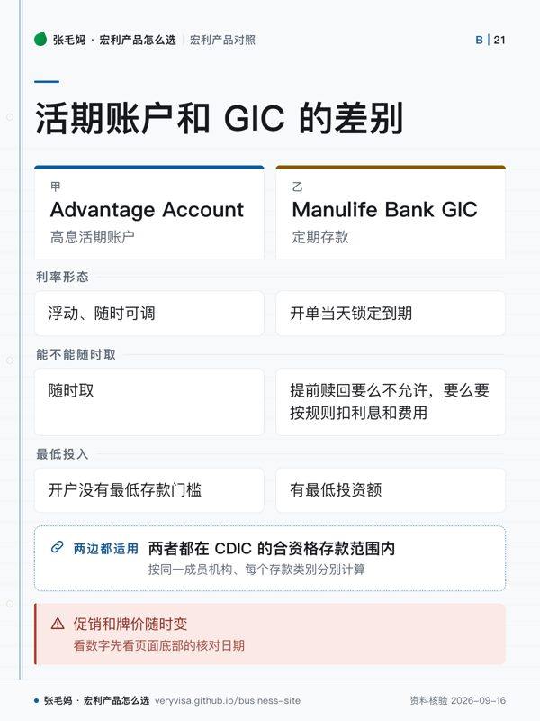
- 先看先看「能不能随时取」这一行；它对应什么时候要用这笔钱。
- 易漏促销期结束后按当时的常规浮动利率继续走，不是长期牌价。
- 下一步去按产品核对完整条款。
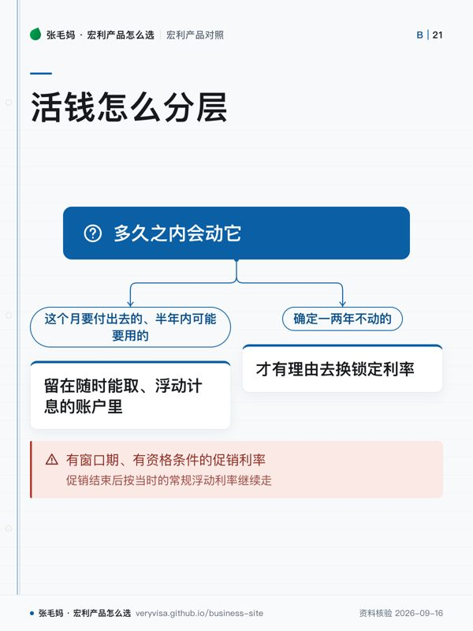
- 先看先从根问题选最接近自己的用钱安排，再看落到哪一边。
- 易漏多年期 GIC 的利息即使到期才付，也要按年报告。
- 下一步去按税务问题继续看利息报告。
一体化房贷账户 vs 高息活期账户


钱怎么进来、怎么花出去
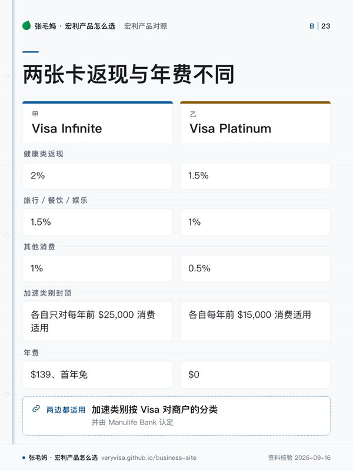
- 先看先看年费这一行，再估自己一年的健康类消费。
- 易漏Visa Infinite 另有个人或家庭收入门槛，旅行医疗天数还按年龄区分。
- 下一步去按产品核对保险证书和申请状态。
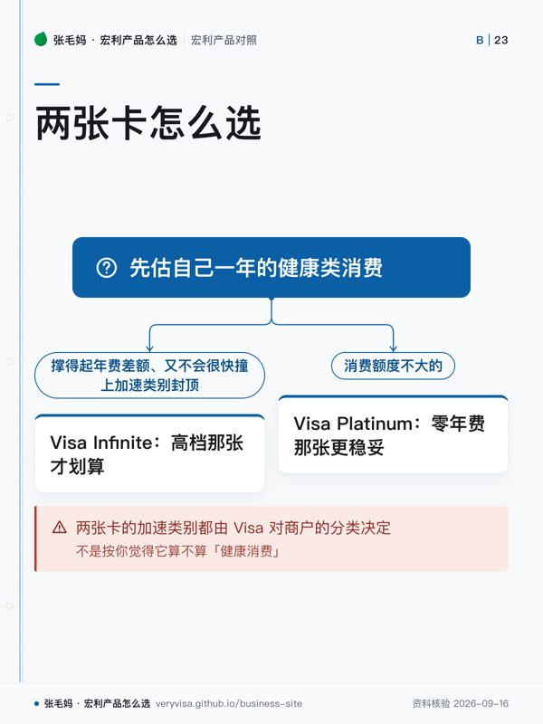
- 先看先判断自己的健康消费规模落在哪个分支，再看对应卡。
- 易漏Visa Infinite 旅行紧急医疗按年龄分天数，其余条件以保险证书为准。
- 下一步去按产品核对收入门槛和保险证书。
银行 GIC 还是保险公司 GIA
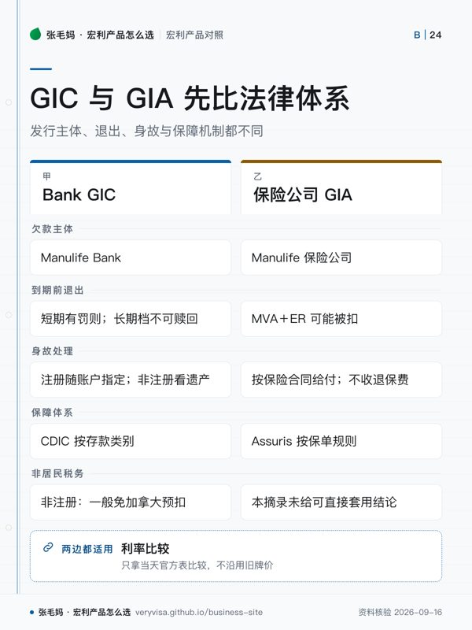
- 先看第一眼先辨合同对手，不要被收益率牵着走。
- 易漏中途变现成本和去世后的处理机制差别很大。
- 下一步确定产品类别后，再核当天报价与细则。
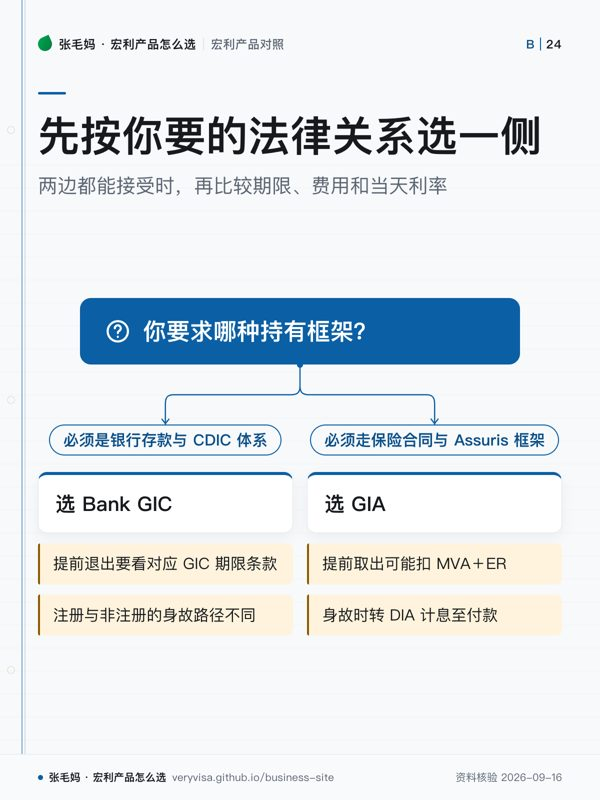
- 先看先列你不能妥协的持有属性。
- 易漏别把中途取钱和去世后的安排混成一件事。
- 下一步确定方向后，再查期限细则与报价日期。
利息收入与 T5：什么时候要报、什么时候收不到单
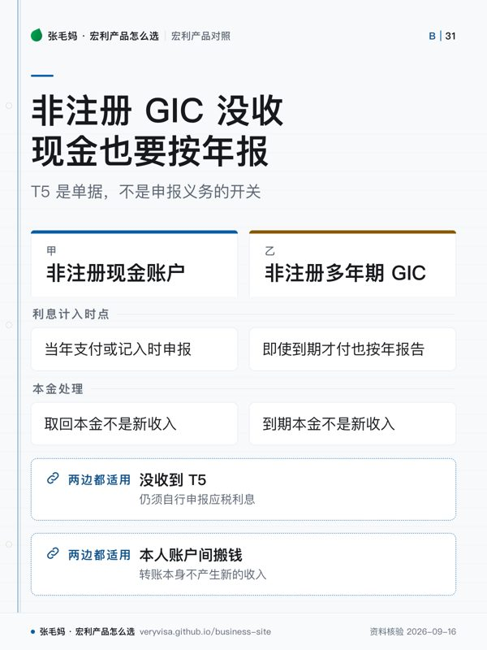
- 先看先分容器，再判断今年有没有形成应计收益。
- 易漏最容易漏的是钱尚未到账却已产生纳税义务。
- 下一步把年内记录对齐，再按税务外壳归类。
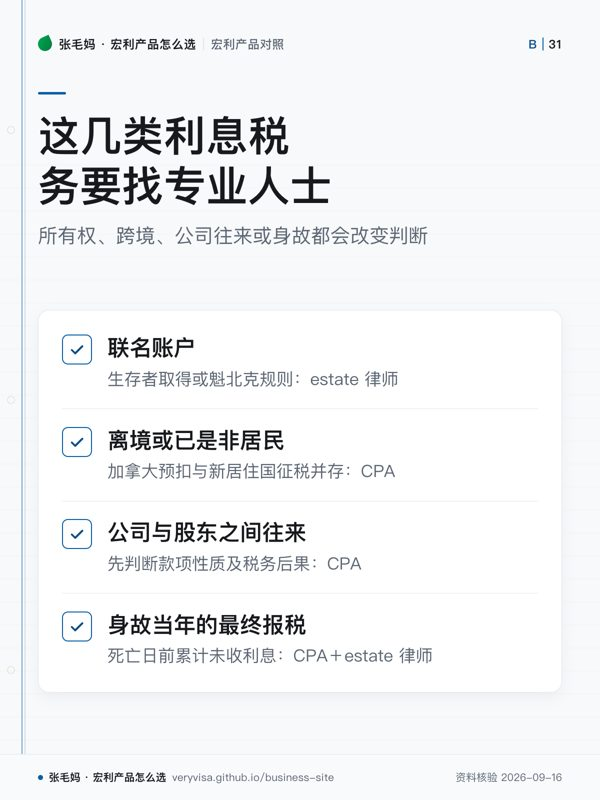
- 先看先看是否出现多人权利、迁居国外或公司往来。
- 易漏表格能算数，不能替你判断钱在法律上归谁。
- 下一步把协议、流水与关键日期交给对应顾问复核。
借来的钱，利息能不能抵税
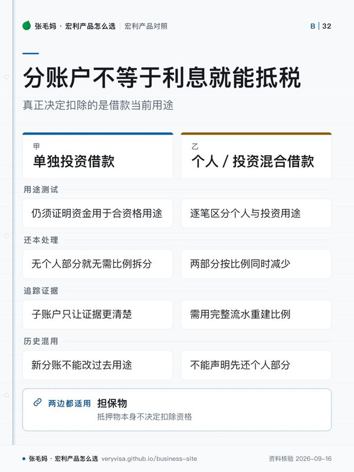
- 先看先画每笔资金从借入到支出的路线。
- 易漏同一债务里还进去的钱不能任意挑一块消掉。
- 下一步留全凭证，之后才有条件复原账目。
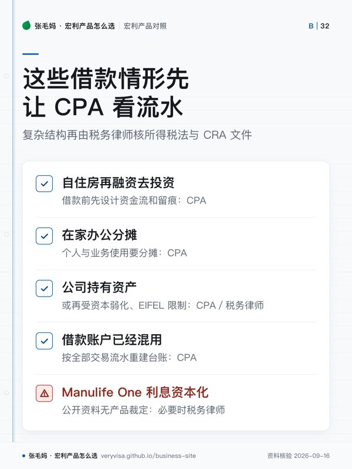
- 先看看到再融资、混用或法人架构，就别只看账单金额。
- 易漏最大风险是事后补解释，却没有连续记录。
- 下一步把完整交易历史交给专业人员复核资金去向。
寿险的钱在税上怎么走
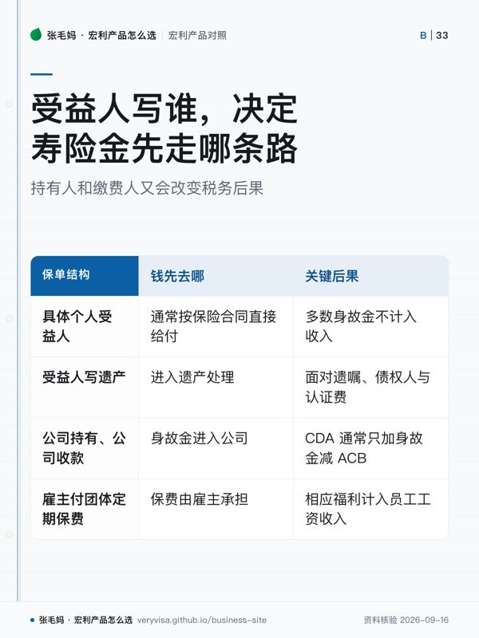
- 先看先辨认合同上谁拿钱、谁出钱。
- 易漏税率往往不是第一道分岔。
- 下一步把付款、持有、领取分成三列再核对。
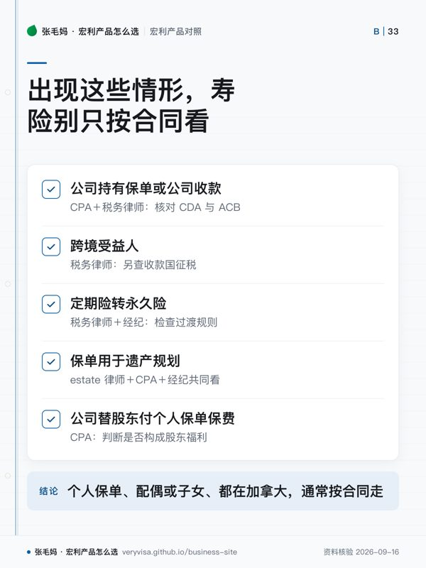
- 先看看到公司、海外或转换，就升级审查。
- 易漏法律路径和报税路径不是同一张图。
- 下一步简单家庭场景也应回到实际保单字段。
遗产认证费用：各省差多少


注册账户在身故时怎么处理
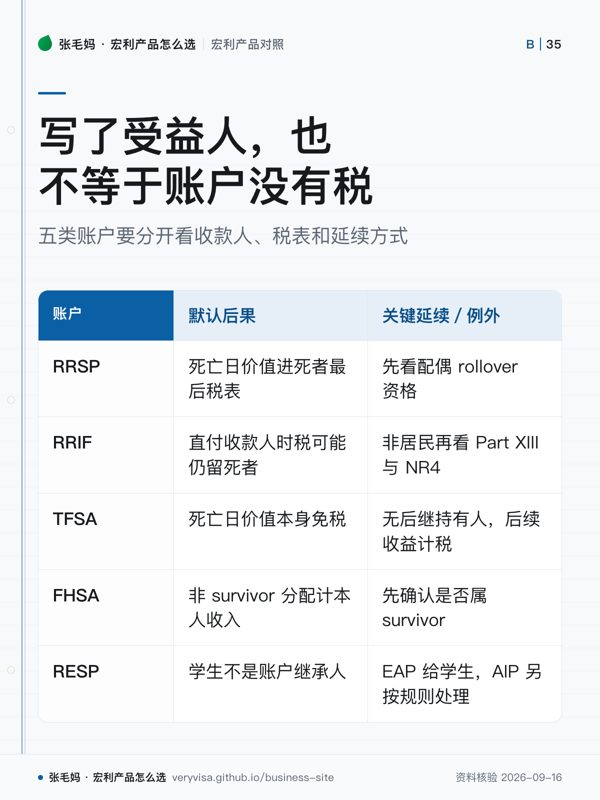
- 先看先把每种账户拆开，不要套同一模板。
- 易漏一笔钱可能由甲收到，却在乙的申报表出现。
- 下一步再检查延续资格和身故后的新增收益。
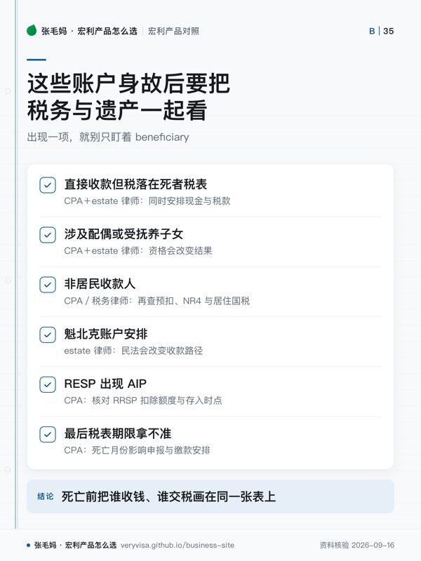
- 先看先圈出跨境、家属关系和魁北克因素。
- 易漏时间要求、扣除资格也会单独改变结果。
- 下一步让法律与报税两边使用同一份资金路径图。
公司持有寿险与资本红利账户 CDA
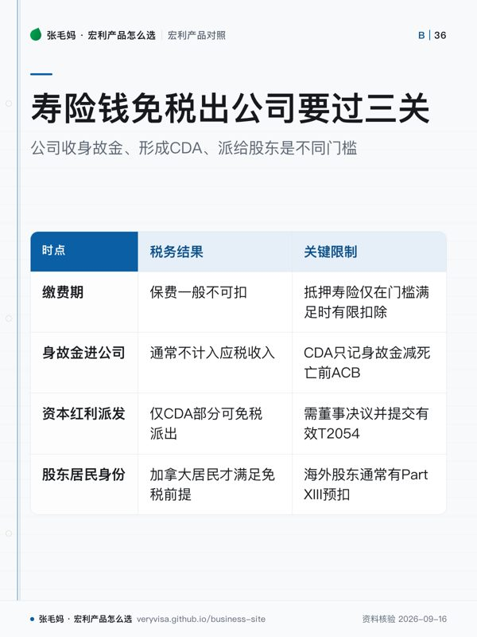
- 先看先顺着资金从企业到账户再到个人的去向读。
- 易漏最容易漏掉的是中间还要完成一项正式申报。
- 下一步把每个环节对应的凭证和身份条件单独核对。
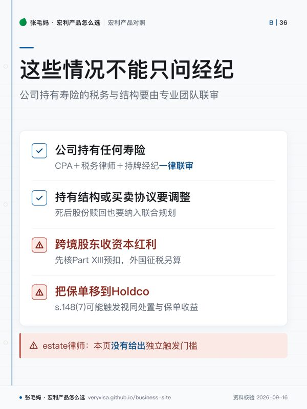
- 先看先圈出会改变所有权、受款人或退出方式的动作。
- 易漏结构一变，原先的税务假设可能立刻失效。
- 下一步把待确认事项按专业角色分派，不要靠口头推断。
慈善捐赠与保险：怎么捐、什么时候捐
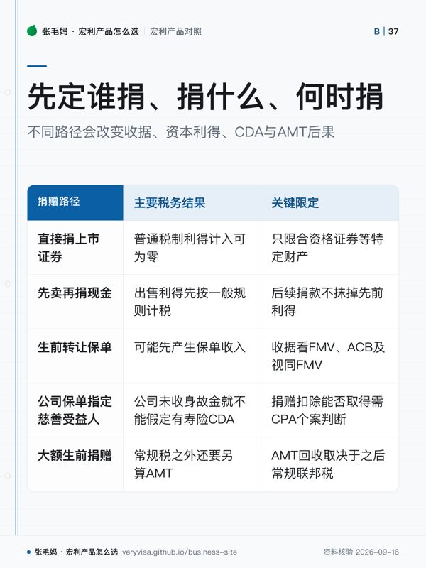
- 先看先按资产形态和动作次序拆开看。
- 易漏账面优惠与手头现金并不总是同步。
- 下一步把备选路径放进同一情景表，再逐项核对。
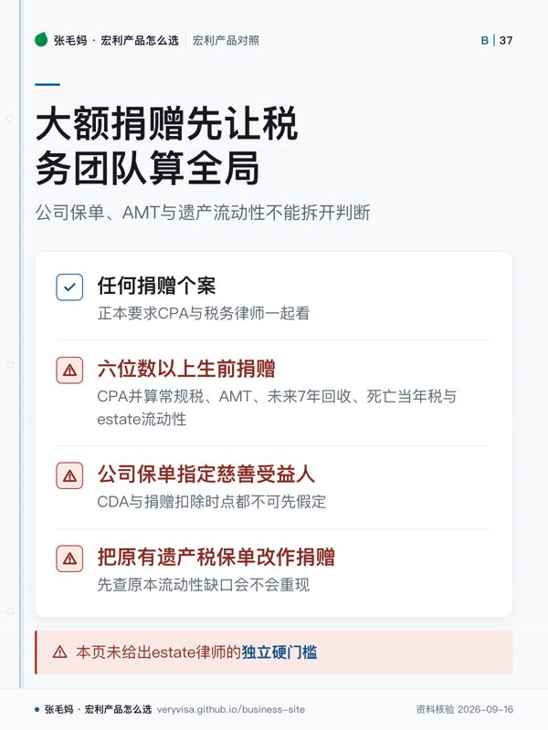
- 先看先标出金额规模、执行时点和遗产现金需求。
- 易漏一张凭证解决不了后续申报与资金缺口。
- 下一步把未证实的假设交给对应专业人士核验。
事实来源
| 官方原文 | 核对日期 |
|---|---|
| 卡上文字出自本站正本页面，正本页面底部列着官方原文与核对日期：https://www.manulifebank.ca/ | 见各正本页 |
本页是公开资料的整理与对照，不是官方文件，也不构成针对你个人情况的保险、投资或税务建议。产品条款、利率与费用以机构当期官方文件为准；税务处理以主管机构原文与持牌专业意见为准。数字会变，看到本页请对一眼「核对日期」。